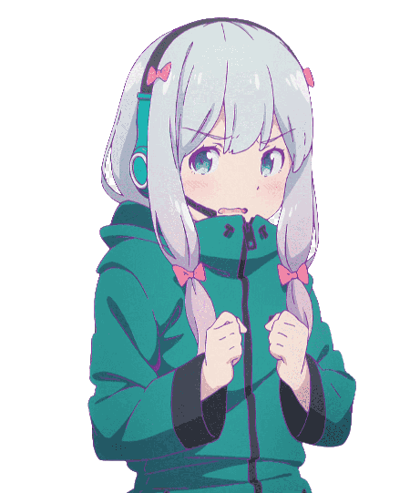

Kazuya Kujou é um estudante estrangeiro da Saint Marguerite Academy, um luxuoso internato no país de Sauville, no sul da Europa. Originário do Japão, seu cabelo preto azeviche e olhos castanhos escuros fazem com que seus colegas o evitem e lhe dêem o apelido de "Ceifador Negro", baseado em uma lenda urbana popular sobre o viajante que traz a morte na primavera.
Em um dia como outro qualquer, Kujou visita a extravagante biblioteca da escola em busca de histórias de fantasmas. No entanto, seu foco logo muda quando ele fica curioso sobre uma mecha dourada de cabelo na escada. Os degraus o levam a um grande jardim e a uma linda menina parecida com uma boneca conhecida como Victorique de Blois, cuja visão complexa e imaginativa lhe permite prever seus futuros, agora entrelaçados.
Com mais mistérios se desenvolvendo rapidamente - incluindo o aparecimento de um navio fantasma e um alquimista com o poder da transmutação - Victorique e Kujou, presos pelo destino e suas habilidades únicas, não têm escolha a não ser confiar um no outro.
(Fonte: MAL Rewrite)

Ryuuji Takasu é um estudante gentil do ensino médio que adora trabalhos domésticos; mas em contraste com sua natureza gentil, ele tem um rosto intimidador que muitas vezes o leva a ser rotulado de delinquente. Por outro lado está Taiga Aisaka, uma pequena aluna parecida com uma boneca, que é tudo menos uma garota fofa e frágil. Equipado com uma katana de madeira e personalidade agressiva, Taiga é conhecido em toda a escola como o "Tigre de Palmtop".
Um dia, um erro embaraçoso faz com que os dois alunos se cruzem. Ryuuji descobre que Taiga realmente tem um lado doce: ela tem uma queda pelo popular vice-presidente, Yuusaku Kitamura, que por acaso é seu melhor amigo. Mas as coisas só ficam mais loucas quando Ryuuji revela que tem uma queda por Minori Kushieda - a melhor amiga de Taiga!
Toradora! é uma comédia romântica que segue essa estranha dupla enquanto eles embarcam em uma missão para ajudar um ao outro com suas respectivas paixões, formando uma aliança improvável no processo.